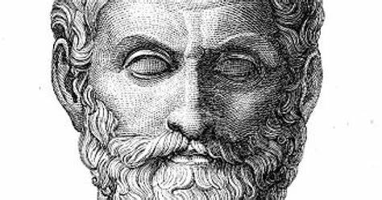

Presocraticos
Los presocráticos fueron un grupo de pensadores griegos que surgieron antes de que Sócrates. Basaron sus diferentes teorías en la especulación sobre el principio y origen natural de la materia que nos rodeaba.
Fueron los primeros pensadores que quebraron todas las formas míticas que rodeaban los pensamientos y empezaron a crear una reflexión racional. Se encargaron de dar el paso que iba de la mitología hacia el logos, proceso del espíritu crítico y condiciones sociales que permitieron una especulación libre, sin ataduras a textos sagrados.
Pitagoras
(Isla de Samos, actual Grecia, h. 572 a.C. - Metaponto, hoy desaparecida, actual Italia, h. 497 a.C.) Filósofo y matemático griego. El universo era un cosmos, es decir, un conjunto ordenado en el que los cuerpos celestes guardaban una disposición armónica que hacía que sus distancias estuvieran entre sí en proporciones similares a las correspondientes a los intervalos de la octava musical; las esferas celestes, al girar, producían la llamada música de las esferas, inaudible al oído humano por ser permanente y perpetua. En un sentido sensible, la armonía era musical; pero su naturaleza inteligible era de tipo numérico, y si todo era armonía, el número resultaba ser la clave de todas las cosas.
Los pitagóricos vieron el principio en el número: las leyes y proporciones numéricas rigen los fenómenos naturales, revelando el orden y la armonía que impera en el cosmos. Sólo con el descubrimiento de tales leyes y proporciones llegamos a un conocimiento exacto y verdadero de las cosas. La santidad predicada por Pitágoras implicaba toda una serie de normas higiénicas basadas en tabúes como la prohibición de consumir animales, que parece haber estado directamente relacionada con la creencia en la transmigración de las almas.
La creencia en la metempsicosis, idea orientalizante y extraña a la tradición griega, implicaba la concepción del alma como ente racional inmortal aprisionado en el cuerpo y responsable de sus actos, de forma que de su conducta en la vida dependería el ser en el que se reencarnaría tras la muerte del cuerpo.
Heráclito
Heráclito es el primer filósofo jónico de quien se conserva una gran cantidad de fragmentos. Se distinguen éstos por su modo de expresión tajante, mordaz, hasta sarcástico, pero lleno de contenido y de fuerza, al que añade un tono profético y solemne. Todo fluye, nada permanece Heráclito afirma que todo está cambiando continuamente y que no hay en la realidad nada que permanezca igual en dos momentos distintos. Ni en el mundo externo ni en nosotros mismos hay nada que pueda considerarse como permanente; lo único auténtico, verdadero en la realidad es el devenir: «Nadie puede bañarse dos veces en el mismo río -dice Heráclito-; las aguas han pasado, otras hay en lugar de las primeras y aun nosotros mismos somos ya otros»>. (Frag. 91)
El fuego: principio de todo
Este filósofo vio en el fuego la causa originaria de todas las cosas que hay en el universo. Tal vez por su incesante movimiento Heráclito lo considero el soporte apropiado de todo devenir el que mejor representa la naturaleza cambiante de las cosas, pues es el que más fácilmente se transforma
Parmenides
Para Parménides es fundamental que distingamos entre la verdad y la mera apariencia. El camino de la verdad sólo puede ser alcanzado por medio de la razón; los sentidos sólo nos dan conocimiento de apariencias, los sentidos nos dicen que las cosas del mundo siempre están cambiando; que son muchas y distintas, nacen y mueren, son y dejan de ser. O más exactamente: son y no son.
-
El núcleo de su pensamiento lo expresa diciendo:
- «El Ser es, y es imposible que no sea», y junto a esto afirma:
- «El No-Ser no es y no puede ni siquiera hablarse de él»> y una tercera afirmación:
- «Es lo mismo el Ser que el pensar>>